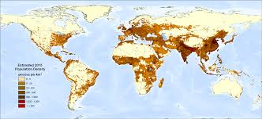

Où vivent les habitants de la Terre ?
La population mondiale est répartie de manière inégale sur la surface du globe. Certains endroits, comme les grandes plaines et les vallées fluviales, sont très peuplés, tandis que d’autres, comme les déserts et les montagnes, ont une faible densité de population.
Pourquoi la population est-elle inégalement répartie ?
Les facteurs naturels et humains influencent la répartition de la population :
- Les ressources naturelles : Les régions avec de l’eau douce, des sols fertiles et un climat favorable attirent les populations. Exemple : les vallées du Gange en Inde.
- Les activités économiques : Les zones industrielles et les grandes villes offrent des opportunités d’emploi, comme dans la mégapole de Tokyo.
- Les infrastructures : Les zones bien desservies par les routes, écoles et hôpitaux sont plus attractives, comme les grandes agglomérations européennes.
Les zones fortement peuplées
- L’Asie de l’Est (Chine, Japon, Corée) : L’une des régions les plus peuplées du monde avec des mégapoles comme Tokyo et Shanghai.
- L’Europe : De nombreuses grandes villes comme Londres, Paris et Berlin concentrent la population.
- L’Asie du Sud (Inde, Pakistan, Bangladesh) : Une forte concentration autour des grandes plaines et des rivières.
Les zones faiblement peuplées
- Les déserts : Le désert du Sahara est très peu propice à l’agriculture en raison de l’absence d’eau.
- Les zones polaires : L’Antarctique est pratiquement inhabitable à cause du froid extrême.
- Les montagnes : L’Himalaya et les Andes sont faiblement peuplés en raison de leurs terrains escarpés et du climat difficile.

Zoom sur les mégapoles mondiales
Les mégapoles sont des villes de plus de 10 millions d’habitants. Voici quelques-unes des plus grandes :
- Tokyo : La plus grande ville du monde avec environ 37 millions d’habitants.
- Delhi : Une mégapole en pleine expansion avec des infrastructures modernes et des zones rurales environnantes.
- Shanghai : Centre économique majeur de la Chine, situé au bord de la rivière Yangtsé.